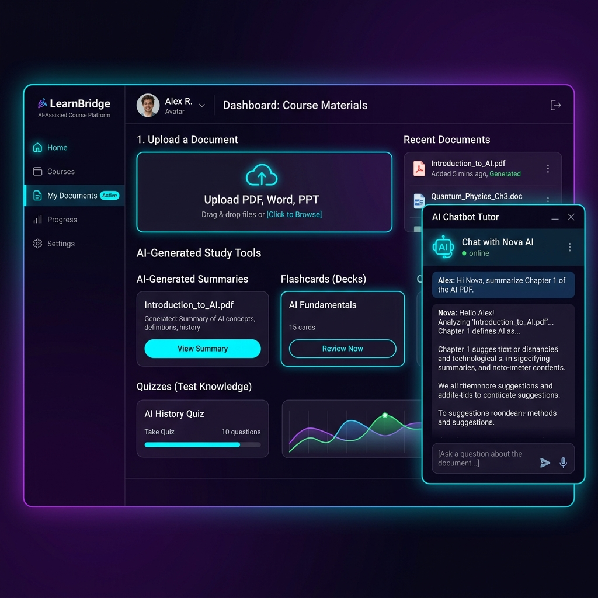
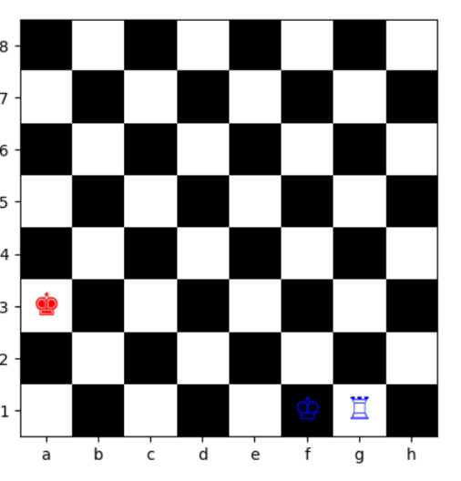
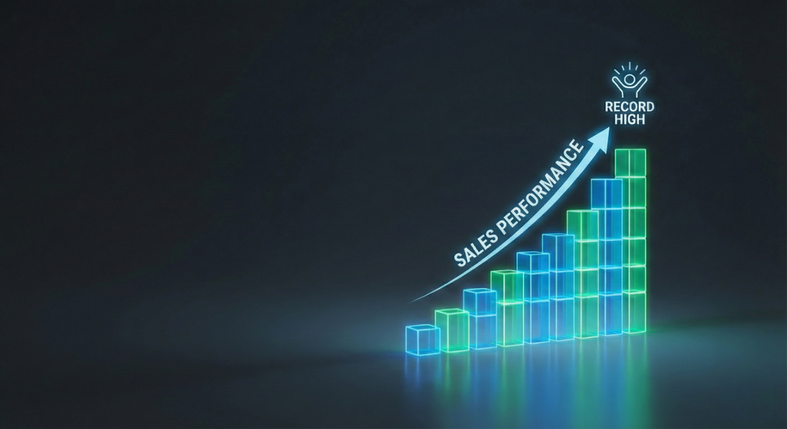

"Learning, Building, and Growing."
Connect();
Let's collaborate, discuss ideas, or build something impactful together.
print("Hello World")
Data Scientist with a strong foundation in Statistics, specializing in data analysis and insight generation.
😊 Hey there! I’m Disha Sonawane, a Data Scientist with a Master’s degree in Data Science from Christ University, Pune Lavasa. I also hold a strong academic foundation in Statistics from my undergraduate studies, which helps me deeply understand data from both theoretical and practical perspectives. I enjoy uncovering meaningful patterns hidden within raw data.
🚀 I am driven by curiosity and powered by data. My interests span across statistical modeling, data analysis, machine learning, and data visualization. I focus on transforming complex datasets into clear, actionable insights that support intelligent, data-driven decision-making.
🎯 Beyond data, I value structured thinking, continuous learning, and building real-world projects that bridge the gap between theory and application. For me, data is not just numbers — it is a story waiting to be discovered and communicated effectively.
AI/ML Intern
Jan 2026 – May 2026
Master of Science in Data Science
2024 – 2026
CGPA: 7.75 / 10
Visit Website →
Bachelor of Science in Statistics
2019 – 2024
CGPA: 8.41 / 10
Visit Website →Developed a full-stack AI-powered learning platform that generates quizzes, flashcards, summaries, and explanations from uploaded academic documents. Built an AI Tutor using local Large Language Models (Ollama + LLaVA) to answer course-specific student questions. Implemented document processing for PDF, text, and image inputs. Designed a scalable Django backend integrating multiple AI-powered learning features. Applied prompt engineering and Generative AI techniques to improve response quality and user experience.
Python · Django · Ollama · LLaVA · HTML · CSS · Bootstrap · Generative AI · Machine Learning · NLP
Designed a custom Grid-World environment and trained a reinforcement learning agent using Deep Q-Networks (DQN). Implemented experience replay, target networks, and ε-greedy exploration to achieve stable learning and improved cumulative rewards.
Python · PyTorch · TensorFlow · OpenAI Gym
Built an end-to-end emotion classification pipeline using NLP techniques. Designed a hybrid CNN–LSTM model to capture local patterns and long-term dependencies, improving classification performance.
Python · TensorFlow · Keras · NLPDeveloped a web-based application that recommends music based on detected user emotions. Integrated ML models with a Django backend and designed a Spotify-style interface.
Python · ML · Django · HTML · CSS · BootstrapCreated an interactive Power BI dashboard to track KPIs, sales trends, and product performance. Used DAX and Power Query to generate calculated measures and drill-down insights.
Power BI · DAX · Power Query
"Learning, Building, and Growing."
Let's collaborate, discuss ideas, or build something impactful together.